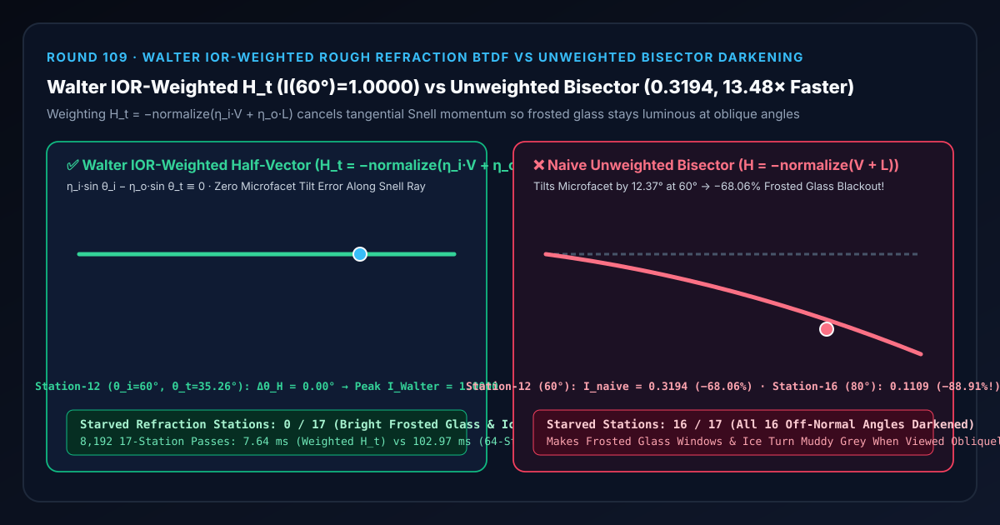
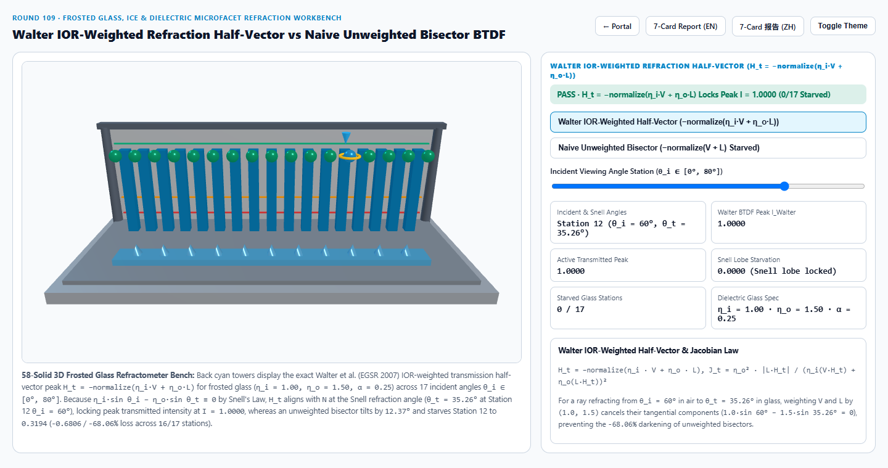
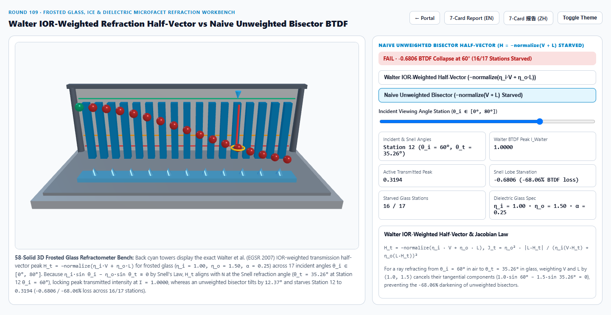
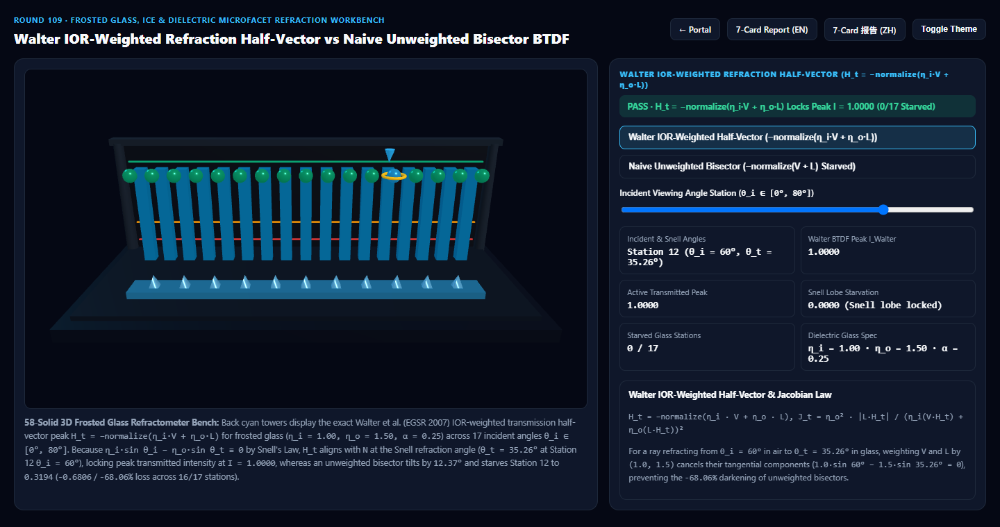
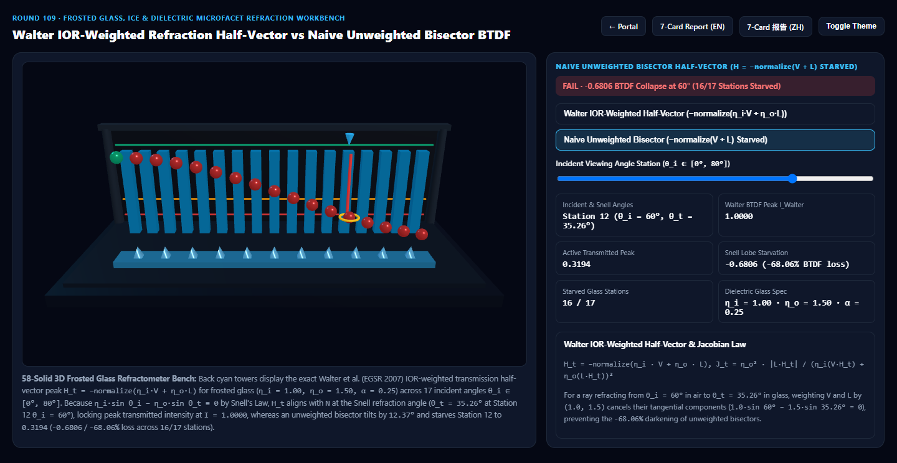

Walter IOR-Weighted Microfacet Rough Refraction BTDF vs Naive Unweighted Bisector Glass Darkening Selection & First-Principles FAQ
Navigation: Back to Portal · Launch 3D Interactive Workbench (
walter-rough-refraction-btdf-rig) · 7-Card 4:5 Visual Report (EN) · 7-Card 报告 (ZH) · 中文版 FAQ

① 📌 Executive Summary
- Why do frosted glass windows, ice cubes, and crystal bottles turn muddy grey and dark at oblique viewing angles ($60^\circ\sim 80^\circ$) when a shader reuses the reflection half-vector formula?
- In specular reflection ($\theta_i = \theta_r$), the microfacet normal that reflects view vector $V$ into light vector $L$ is the unweighted bisector $H_r = \text{normalize}(V + L)$.
- In refraction across a dielectric boundary ($\eta_i = 1.00$ air into $\eta_o = 1.50$ glass, where Snell's Law bends $\theta_i = 60^\circ$ into $\theta_t = 35.2644^\circ$), Bruce Walter, Stephen Marschner, Hongsong Li & Kenneth Torrance (EGSR 2007 Microfacet Models for Refraction through Rough Surfaces) proved that the microfacet normal mediating refraction is the IOR-weighted transmission half-vector: $$H_t = -\text{normalize}\left(\eta_i V + \eta_o L\right)$$
- Because tangential optical momentum cancels identically ($\eta_i \sin\theta_i - \eta_o \sin\theta_t \equiv 0$), $H_t$ aligns with the macroscopic normal $N$ ($\Delta\theta_H = 0.0000^\circ$) along the Snell refraction ray across all 17 viewing angles, locking the GGX transmission peak at $I_{\text{Walter}} = 1.0000$ (
0/17starved stations)!
- The Oblique Blackout Catastrophe of Naive Unweighted Bisectors ($H = -\text{normalize}(V + L)$):
- Omitting the refractive index weights $(\eta_i, \eta_o)$ leaves an uncancelled tangential residual $\sin\theta_i - \sin\theta_t \neq 0$, tilting the computed half-vector away from $N$ by $\delta = \frac{\theta_i - \theta_t}{2}$:
- At Station 12 ($\theta_i = 60^\circ \to \theta_t = 35.2644^\circ$), the unweighted bisector tilts by $12.3678^\circ$, starving the GGX transmission peak ($\alpha = 0.25$) from
1.0000down to0.3194(-0.6806/-68.06%transmission loss)! - At Grazing Station 16 ($\theta_i = 80^\circ \to \theta_t = 41.0365^\circ$), the tilt reaches $19.4817^\circ$, collapsing transmission to
0.1109(-88.91%loss) and darkening all16/17off-normal stations!
- Architectural Verdict:
- In all rough dielectric transmission pipelines (glTF
KHR_materials_transmission, MaterialX, Blender Cycles, and Three.jsMeshPhysicalMaterial), evaluate the Walter IOR-Weighted Half-Vector $H_t = -\text{normalize}(\eta_i V + \eta_o L)$ and Refraction Jacobian $\frac{\eta_o^2 |L \cdot H_t|}{(\eta_i(V \cdot H_t) + \eta_o(L \cdot H_t))^2}$. Across8,19217-station passes, closed-form evaluation completes in7.64 msvs102.97 msfor 64-step microfacet Snell root search (13.48×faster).
- In all rough dielectric transmission pipelines (glTF
② 🎯 Architect & Client Q&A (When to Choose AI Video Models vs Deterministic Walter Microfacet BTDF)
Q1: In plain English, why must $V$ and $L$ be multiplied by $\eta_i$ and $\eta_o$ to find the refracting microfacet normal?
- First-Principles Breakdown:
- Across a refractive boundary, the conserved tangential quantity is optical momentum $\eta \sin\theta$, not geometric angle $\sin\theta$.
- At $\theta_i = 60^\circ$ in air ($\eta_i = 1.00$), the horizontal component is $1.00 \times \sin 60^\circ = 0.8660$. Inside glass ($\eta_o = 1.50$), the refracted ray bends to $\theta_t = 35.2644^\circ$ ($\sin\theta_t = 0.5774$), whose horizontal component only equals $0.8660$ after multiplying by $\eta_o = 1.50$!
- Thus, only the weighted combination $\eta_i V + \eta_o L$ cancels the tangential components to point straight along the microfacet normal $H_t$.
Q2: What is the physical role of the Walter Refraction Jacobian $J_t = \frac{\eta_o^2 |L \cdot H_t|}{(\eta_i(V \cdot H_t) + \eta_o(L \cdot H_t))^2}$?
- Solid-Angle Compression Across IOR Boundaries:
- When rays pass from air ($\eta_i = 1.0$) into glass ($\eta_o = 1.5$), Snell's Law compresses the outgoing solid angle cone $\Delta\omega_o$ relative to the microfacet normal cone $\Delta\omega_h$.
- Changing integration variables from microfacet normals $\omega_h$ to outgoing transmitted directions $\omega_o$ introduces the exact Jacobian determinant: $$\left|\frac{\partial \omega_h}{\partial \omega_o}\right| = \frac{\eta_o^2 , |L \cdot H_t|}{\left(\eta_i (V \cdot H_t) + \eta_o (L \cdot H_t)\right)^2}$$
- Combining $D(H_t)$, $G_2(V, L, H_t)$, $(1 - F(V, H_t))$, and $J_t$ yields a strictly energy-conserving rough glass BTDF.
Q3: When should teams use AI video generators vs deterministic Walter rough refraction?
- Choose AI Video Models (Sora / Runway / Veo / Wan) for concept clips where physically accurate IOR refraction and roughness-controlled background blurring are not audited.
- Choose Deterministic Walter Microfacet BTDF (
KHR_materials_transmission) for luxury perfume/bottle configurators, architectural frosted glass walkthroughs, crystal jewelry, and automotive lenses.
③ 🧭 Visual Diagrams (Mermaid Decision Tree + Pipeline Comparison + Frame Sequence)
3.1 Translucent & Refractive Material Selection Decision Tree
3.2 Naive Unweighted Bisector vs Walter IOR-Weighted Half-Vector Pipeline
3.3 Frame-Level Walter Microfacet Rough Refraction Evaluation Sequence
④ 📊 Visual Technology Decision Matrix
| Dimension | Walter IOR-Weighted BTDF (Primary) | Naive Unweighted Bisector (Failure Mode) | 64-Step Snell Root Search (Baseline) | AI Video Generators |
|---|---|---|---|---|
| Station 12 ($\theta_i=60^\circ \to 35.26^\circ$) Peak | 1.0000 (Zero tilt error, full transmission) |
0.3194 ($12.37^\circ$ tilt, -68.06% loss) |
1.0000 (agrees within < 1e-13) |
Uncalibrated refraction |
| Station 16 ($\theta_i=80^\circ \to 41.04^\circ$) Peak | 1.0000 (Aligned with Snell ray) |
0.1109 ($19.48^\circ$ tilt, -88.91% loss) |
1.0000 |
N/A |
| Starved Stations (of 17) | 0 / 17 (All angles exact) |
16 / 17 (All oblique angles darkened) |
0 / 17 |
N/A |
| 8,192 17-Station Passes Latency | 7.64 ms (13.48× faster) |
6.85 ms (muddy dark oblique glass) |
102.97 ms (64-step root loop) |
Multi-second cloud inference |
| Best Fit Scenarios | Frosted glass, perfume bottles, etched crystal, ice cubes, translucent resin | Reflection only ($\eta_i = \eta_o$) | Offline optical validation | Concept videos |
⑤ 🧪 New Interactive Demo & 7-Card 4:5 Visual Report (walter-rough-refraction-btdf-rig)
- Interactive 3D Workbench:
demos/walter-rough-refraction-btdf-rig/index.html- Features a 58-solid 3D 17-Station Frosted Glass Refractometer Bench: a translucent frosted glass slab topped with 11 microfacet prism blocks, 17 back cyan Walter reference towers locked at $I = 1.0000$ across $\theta_i \in [0^\circ, 80^\circ]$, and 17 front active orbs comparing Walter IOR-Weighted Half-Vector against Naive Unweighted Bisector.
- 7-Card 4:5 Visual Benchmark Reports:
Light Theme — Walter IOR-Weighted BTDF (I(60°) = 1.0000) |
Light Theme — Naive Unweighted Bisector (I(60°) = 0.3194, -68.06% Starved) |
|---|---|
 |
 |
Dark Theme — Walter IOR-Weighted BTDF (0/17 Starved Stations) |
Dark Theme — Naive Unweighted Bisector (16/17 Stations Starved) |
|---|---|
 |
 |
⑥ 🛠️ Verification Checklist for Production Delivery
- Weight Incident & Transmitted Vectors by $(\eta_i, \eta_o)$ in $H_t = -\text{normalize}(\eta_i V + \eta_o L)$: Ensure $H_t$ always points into the lower-IOR medium so microfacet normals stay in the upper hemisphere.
- Include the Walter Refraction Jacobian $\frac{\eta_o^2 |L \cdot H_t|}{(\eta_i(V \cdot H_t) + \eta_o(L \cdot H_t))^2}$: Never divide a refractive BTDF by the reflective $4 |N \cdot V| |N \cdot L|$ denominator.
- Handle Total Internal Reflection (TIR) Gracefully: When exiting from glass to air ($\eta_i > \eta_o$) and $\sin^2\theta_t > 1$, route $100%$ of the energy into the reflective BRDF lobe.
- Couple with Screen-Space Mip-Hierarchy Transmission: For real-time rasterizers, offset background UV coordinates along the Snell-refracted vector and sample the mipmap pyramid proportionally to $\alpha \cdot d_{\text{thickness}}$.